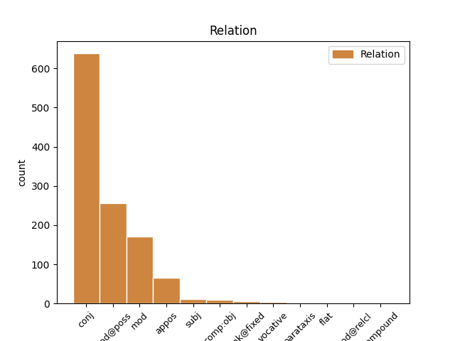
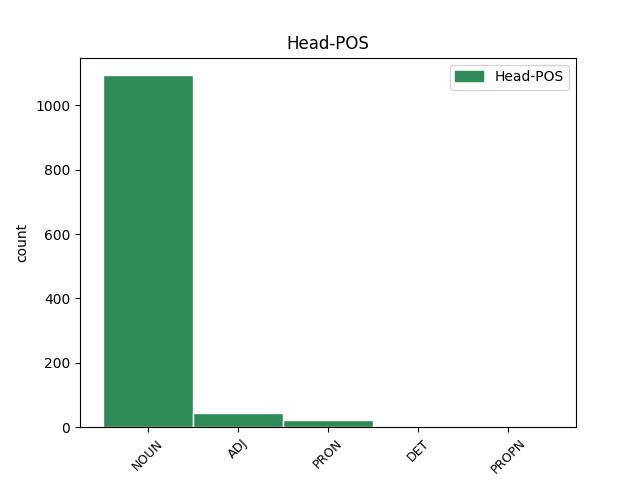
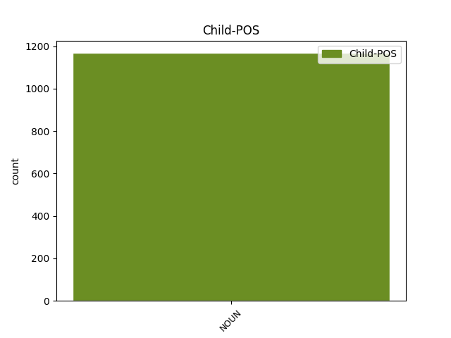

Distribution of features within this leaf



Agreement Rules sorted by frequency.
- When the dependent token is the conjunct(conj) of the head token, and the dependent token is NOUN.
1 Baren _ _ _ _ 0 _ _ _
2 var _ _ _ _ 0 _ _ _
3 ett _ _ _ _ 0 _ _ _
4 schackbräde _ _ _ _ 0 _ _ _
5 av _ _ _ _ 0 _ _ _
6 par par NOUN PL-IND-NOM Case=Nom|Definite=Ind|Gender=Com|Number=Plur 0 _ _ _
7 som _ _ _ _ 0 _ _ _
8 manövrerade _ _ _ _ 0 _ _ _
9 sina _ _ _ _ 0 _ _ _
10 martinis _ _ _ _ 0 _ _ _
11 och _ _ _ _ 0 _ _ _
12 kypare kypare NOUN IND-NOM Case=Nom|Definite=Ind|Gender=Com|Number=Plur 6 conj _ _
13 som _ _ _ _ 0 _ _ _
14 bar _ _ _ _ 0 _ _ _
15 krombrickor _ _ _ _ 0 _ _ _
16 högt _ _ _ _ 0 _ _ _
17 uppe _ _ _ _ 0 _ _ _
18 i _ _ _ _ 0 _ _ _
19 luften _ _ _ _ 0 _ _ _
20 . _ _ _ _ 0 _ _ _
1 Hon _ _ _ _ 0 _ _ _
2 var _ _ _ _ 0 _ _ _
3 slank _ _ _ _ 0 _ _ _
4 , _ _ _ _ 0 _ _ _
5 spänd _ _ _ _ 0 _ _ _
6 , _ _ _ _ 0 _ _ _
7 en _ _ _ _ 0 _ _ _
8 vinthunds vinthund NOUN SG-IND-GEN Case=Gen|Definite=Ind|Gender=Com|Number=Sing 9 mod@poss _ _
9 kropp kropp NOUN SG-IND-NOM Case=Nom|Definite=Ind|Gender=Com|Number=Sing 0 _ _ _
10 , _ _ _ _ 0 _ _ _
11 nu _ _ _ _ 0 _ _ _
12 halvt _ _ _ _ 0 _ _ _
13 framåtböjd _ _ _ _ 0 _ _ _
14 , _ _ _ _ 0 _ _ _
15 ryggmusklerna _ _ _ _ 0 _ _ _
16 avtecknade _ _ _ _ 0 _ _ _
17 sig _ _ _ _ 0 _ _ _
18 under _ _ _ _ 0 _ _ _
19 skjortan _ _ _ _ 0 _ _ _
20 , _ _ _ _ 0 _ _ _
21 vit _ _ _ _ 0 _ _ _
22 , _ _ _ _ 0 _ _ _
23 stärkt _ _ _ _ 0 _ _ _
24 , _ _ _ _ 0 _ _ _
25 dyr _ _ _ _ 0 _ _ _
26 . _ _ _ _ 0 _ _ _
1 Min _ _ _ _ 0 _ _ _
2 farmor _ _ _ _ 0 _ _ _
3 , _ _ _ _ 0 _ _ _
4 som _ _ _ _ 0 _ _ _
5 var _ _ _ _ 0 _ _ _
6 fast _ _ _ _ 0 _ _ _
7 övertygad _ _ _ _ 0 _ _ _
8 anhängare _ _ _ _ 0 _ _ _
9 av _ _ _ _ 0 _ _ _
10 Guds _ _ _ _ 0 _ _ _
11 ord _ _ _ _ 0 _ _ _
12 , _ _ _ _ 0 _ _ _
13 fann _ _ _ _ 0 _ _ _
14 större _ _ _ _ 0 _ _ _
15 nöje _ _ _ _ 0 _ _ _
16 i _ _ _ _ 0 _ _ _
17 denna _ _ _ _ 0 _ _ _
18 stund _ _ _ _ 0 _ _ _
19 än _ _ _ _ 0 _ _ _
20 någon _ _ _ _ 0 _ _ _
21 annan _ _ _ _ 0 _ _ _
22 under _ _ _ _ 0 _ _ _
23 hela _ _ _ _ 0 _ _ _
24 veckan _ _ _ _ 0 _ _ _
25 , _ _ _ _ 0 _ _ _
26 inklusive _ _ _ _ 0 _ _ _
27 torsdag torsdag NOUN SG-IND-NOM Case=Nom|Definite=Ind|Gender=Com|Number=Sing 0 _ _ _
28 eftermiddag eftermiddag NOUN SG-IND-NOM Case=Nom|Definite=Ind|Gender=Com|Number=Sing 27 mod _ _
29 klockan _ _ _ _ 0 _ _ _
30 två _ _ _ _ 0 _ _ _
31 då _ _ _ _ 0 _ _ _
32 hon _ _ _ _ 0 _ _ _
33 kvitterade _ _ _ _ 0 _ _ _
34 ut _ _ _ _ 0 _ _ _
35 sin _ _ _ _ 0 _ _ _
36 pension _ _ _ _ 0 _ _ _
37 . _ _ _ _ 0 _ _ _
1 Hon _ _ _ _ 0 _ _ _
2 var _ _ _ _ 0 _ _ _
3 irländska irländska NOUN SG-IND-NOM Case=Nom|Definite=Ind|Gender=Com|Number=Plur 0 _ _ _
4 , _ _ _ _ 0 _ _ _
5 nästan _ _ _ _ 0 _ _ _
6 förmögen _ _ _ _ 0 _ _ _
7 , _ _ _ _ 0 _ _ _
8 dotter dotter NOUN SG-IND-NOM Case=Nom|Definite=Ind|Degree=Pos|Number=Plur 3 appos _ _
9 till _ _ _ _ 0 _ _ _
10 en _ _ _ _ 0 _ _ _
11 av _ _ _ _ 0 _ _ _
12 delägarna _ _ _ _ 0 _ _ _
13 i _ _ _ _ 0 _ _ _
14 firman _ _ _ _ 0 _ _ _
15 , _ _ _ _ 0 _ _ _
16 som _ _ _ _ 0 _ _ _
17 hade _ _ _ _ 0 _ _ _
18 sitt _ _ _ _ 0 _ _ _
19 huvudkontor _ _ _ _ 0 _ _ _
20 i _ _ _ _ 0 _ _ _
21 Cork _ _ _ _ 0 _ _ _
22 . _ _ _ _ 0 _ _ _
1 På _ _ _ _ 0 _ _ _
2 bröllopsnatten _ _ _ _ 0 _ _ _
3 på _ _ _ _ 0 _ _ _
4 Hotel _ _ _ _ 0 _ _ _
5 Ra-Ra _ _ _ _ 0 _ _ _
6 ( _ _ _ _ 0 _ _ _
7 dekor dekor NOUN SG-IND-NOM Case=Nom|Definite=Ind|Gender=Com|Number=Sing 10 subj _ SpaceAfter=No
8 : _ _ _ _ 0 _ _ _
9 liverpoolskt _ _ _ _ 0 _ _ _
10 egyptiskt egyptisk ADJ POS-SG-IND Case=Nom|Definite=Ind|Degree=Pos|Gender=Neut|Number=Sing 0 _ _ _
11 ) _ _ _ _ 0 _ _ _
12 , _ _ _ _ 0 _ _ _
13 tog _ _ _ _ 0 _ _ _
14 min _ _ _ _ 0 _ _ _
15 far _ _ _ _ 0 _ _ _
16 av _ _ _ _ 0 _ _ _
17 sig _ _ _ _ 0 _ _ _
18 pyjamasen _ _ _ _ 0 _ _ _
19 så _ _ _ _ 0 _ _ _
20 att _ _ _ _ 0 _ _ _
21 hans _ _ _ _ 0 _ _ _
22 hustru _ _ _ _ 0 _ _ _
23 kunde _ _ _ _ 0 _ _ _
24 beskåda _ _ _ _ 0 _ _ _
25 honom _ _ _ _ 0 _ _ _
26 som _ _ _ _ 0 _ _ _
27 den _ _ _ _ 0 _ _ _
28 man _ _ _ _ 0 _ _ _
29 han _ _ _ _ 0 _ _ _
30 var _ _ _ _ 0 _ _ _
31 , _ _ _ _ 0 _ _ _
32 varefter _ _ _ _ 0 _ _ _
33 han _ _ _ _ 0 _ _ _
34 förkunnade _ _ _ _ 0 _ _ _
35 att _ _ _ _ 0 _ _ _
36 han _ _ _ _ 0 _ _ _
37 inte _ _ _ _ 0 _ _ _
38 tänkte _ _ _ _ 0 _ _ _
39 älska _ _ _ _ 0 _ _ _
40 med _ _ _ _ 0 _ _ _
41 henne _ _ _ _ 0 _ _ _
42 förrän _ _ _ _ 0 _ _ _
43 han _ _ _ _ 0 _ _ _
44 hade _ _ _ _ 0 _ _ _
45 blivit _ _ _ _ 0 _ _ _
46 utsedd _ _ _ _ 0 _ _ _
47 till _ _ _ _ 0 _ _ _
48 chef _ _ _ _ 0 _ _ _
49 för _ _ _ _ 0 _ _ _
50 rederiet _ _ _ _ 0 _ _ _
51 . _ _ _ _ 0 _ _ _
1 Det _ _ _ _ 0 _ _ _
2 hördes _ _ _ _ 0 _ _ _
3 ett _ _ _ _ 0 _ _ _
4 förfärligt _ _ _ _ 0 _ _ _
5 skrammel _ _ _ _ 0 _ _ _
6 och _ _ _ _ 0 _ _ _
7 dunder _ _ _ _ 0 _ _ _
8 utanför _ _ _ _ 0 _ _ _
9 dörren _ _ _ _ 0 _ _ _
10 och _ _ _ _ 0 _ _ _
11 mina _ _ _ _ 0 _ _ _
12 föräldrar _ _ _ _ 0 _ _ _
13 brakade _ _ _ _ 0 _ _ _
14 in _ _ _ _ 0 _ _ _
15 i _ _ _ _ 0 _ _ _
16 hallen _ _ _ _ 0 _ _ _
17 ; _ _ _ _ 0 _ _ _
18 hon _ _ _ _ 0 _ _ _
19 iförd iförd ADJ AD-SG-IND Case=Nom|Definite=Ind|Gender=Com|Number=Sing 0 _ _ _
20 silverräv silverräv NOUN IND-NOM Case=Nom|Definite=Ind|Gender=Neut|Number=Sing 19 comp:obj _ SpaceAfter=No
21 , _ _ _ _ 0 _ _ _
22 han _ _ _ _ 0 _ _ _
23 i _ _ _ _ 0 _ _ _
24 ny _ _ _ _ 0 _ _ _
25 överrock _ _ _ _ 0 _ _ _
26 och _ _ _ _ 0 _ _ _
27 trilbyhatt _ _ _ _ 0 _ _ _
28 . _ _ _ _ 0 _ _ _
1 Utanför _ _ _ _ 0 _ _ _
2 ytterdörren _ _ _ _ 0 _ _ _
3 låg _ _ _ _ 0 _ _ _
4 en en DET SG-IND Definite=Ind|Gender=Com|Number=Sing|PronType=Art 0 _ _ _
5 massa massa NOUN SG-IND-NOM Case=Nom|Definite=Ind|Gender=Com|Number=Sing 4 unk@fixed _ _
6 gummistövlar _ _ _ _ 0 _ _ _
7 i _ _ _ _ 0 _ _ _
8 en _ _ _ _ 0 _ _ _
9 enda _ _ _ _ 0 _ _ _
10 röra _ _ _ _ 0 _ _ _
11 tillsammans _ _ _ _ 0 _ _ _
12 med _ _ _ _ 0 _ _ _
13 en _ _ _ _ 0 _ _ _
14 väldigt _ _ _ _ 0 _ _ _
15 rostig _ _ _ _ 0 _ _ _
16 kittel _ _ _ _ 0 _ _ _
17 . _ _ _ _ 0 _ _ _
1 Herr _ _ _ _ 0 _ _ _
2 ordförande ordförande NOUN SG-IND-NOM Case=Nom|Definite=Ind|Gender=Com|Number=Sing 5 vocative _ SpaceAfter=No
3 ! _ _ _ _ 0 _ _ _
4 många _ _ _ _ 0 _ _ _
5 tack tack NOUN SG-IND-NOM Case=Nom|Definite=Ind|Gender=Neut|Number=Sing 0 _ _ _
6 till _ _ _ _ 0 _ _ _
7 herr _ _ _ _ 0 _ _ _
8 Barzanti _ _ _ _ 0 _ _ _
9 . _ _ _ _ 0 _ _ _
1 " _ _ _ _ 0 _ _ _
2 Mitt _ _ _ _ 0 _ _ _
3 fel fel NOUN IND-NOM Case=Nom|Definite=Ind|Gender=Neut|Number=Sing 0 _ _ _
4 " _ _ _ _ 0 _ _ _
5 , _ _ _ _ 0 _ _ _
6 sa _ _ _ _ 0 _ _ _
7 hon _ _ _ _ 0 _ _ _
8 för _ _ _ _ 0 _ _ _
9 sig _ _ _ _ 0 _ _ _
10 själv _ _ _ _ 0 _ _ _
11 . _ _ _ _ 0 _ _ _
12 " _ _ _ _ 0 _ _ _
13 Mitt _ _ _ _ 0 _ _ _
14 fel fel NOUN IND-NOM Case=Nom|Definite=Ind|Gender=Neut|Number=Sing 3 parataxis _ SpaceAfter=No
15 . _ _ _ _ 0 _ _ _
16 " _ _ _ _ 0 _ _ _
1 XSLT _ _ _ _ 0 _ _ _
2 ( _ _ _ _ 0 _ _ _
3 Extensible _ _ _ _ 0 _ _ _
4 Stylesheet _ _ _ _ 0 _ _ _
5 Language _ _ _ _ 0 _ _ _
6 Transformation _ _ _ _ 0 _ _ _
7 ) _ _ _ _ 0 _ _ _
8 är _ _ _ _ 0 _ _ _
9 en _ _ _ _ 0 _ _ _
10 specifikation _ _ _ _ 0 _ _ _
11 som _ _ _ _ 0 _ _ _
12 för _ _ _ _ 0 _ _ _
13 närvarande _ _ _ _ 0 _ _ _
14 är _ _ _ _ 0 _ _ _
15 under _ _ _ _ 0 _ _ _
16 utveckling _ _ _ _ 0 _ _ _
17 av _ _ _ _ 0 _ _ _
18 World world NOUN SG-NOM-FGN Case=Nom|Number=Sing 21 compound _ _
19 Wide _ _ _ _ 0 _ _ _
20 Web _ _ _ _ 0 _ _ _
21 Consortium consortium NOUN SG-NOM-FGN Case=Nom|Number=Sing 0 _ _ _
22 ( _ _ _ _ 0 _ _ _
23 W3C _ _ _ _ 0 _ _ _
24 ) _ _ _ _ 0 _ _ _
25 och _ _ _ _ 0 _ _ _
26 som _ _ _ _ 0 _ _ _
27 stöds _ _ _ _ 0 _ _ _
28 av _ _ _ _ 0 _ _ _
29 Access _ _ _ _ 0 _ _ _
30 . _ _ _ _ 0 _ _ _
1 XSLT _ _ _ _ 0 _ _ _
2 ( _ _ _ _ 0 _ _ _
3 Extensible _ _ _ _ 0 _ _ _
4 Stylesheet _ _ _ _ 0 _ _ _
5 Language _ _ _ _ 0 _ _ _
6 Transformation _ _ _ _ 0 _ _ _
7 ) _ _ _ _ 0 _ _ _
8 är _ _ _ _ 0 _ _ _
9 en _ _ _ _ 0 _ _ _
10 specifikation _ _ _ _ 0 _ _ _
11 som _ _ _ _ 0 _ _ _
12 för _ _ _ _ 0 _ _ _
13 närvarande _ _ _ _ 0 _ _ _
14 är _ _ _ _ 0 _ _ _
15 under _ _ _ _ 0 _ _ _
16 utveckling _ _ _ _ 0 _ _ _
17 av _ _ _ _ 0 _ _ _
18 World world NOUN SG-NOM-FGN Case=Nom|Number=Sing 0 _ _ _
19 Wide _ _ _ _ 0 _ _ _
20 Web web NOUN SG-NOM-FGN Case=Nom|Number=Sing 18 flat _ _
21 Consortium _ _ _ _ 0 _ _ _
22 ( _ _ _ _ 0 _ _ _
23 W3C _ _ _ _ 0 _ _ _
24 ) _ _ _ _ 0 _ _ _
25 och _ _ _ _ 0 _ _ _
26 som _ _ _ _ 0 _ _ _
27 stöds _ _ _ _ 0 _ _ _
28 av _ _ _ _ 0 _ _ _
29 Access _ _ _ _ 0 _ _ _
30 . _ _ _ _ 0 _ _ _
1 För _ _ _ _ 0 _ _ _
2 sina _ _ _ _ 0 _ _ _
3 strängare _ _ _ _ 0 _ _ _
4 vänsterkritiker vänsterkritiker NOUN IND-NOM Case=Nom|Definite=Ind|Gender=Com|Number=Plur 0 _ _ _
5 , _ _ _ _ 0 _ _ _
6 somliga _ _ _ _ 0 _ _ _
7 av _ _ _ _ 0 _ _ _
8 dem _ _ _ _ 0 _ _ _
9 judar jude NOUN PL-IND-NOM Case=Nom|Definite=Ind|Gender=Com|Number=Plur 4 mod@relcl _ SpaceAfter=No
10 , _ _ _ _ 0 _ _ _
11 är _ _ _ _ 0 _ _ _
12 Israel _ _ _ _ 0 _ _ _
13 å _ _ _ _ 0 _ _ _
14 andra _ _ _ _ 0 _ _ _
15 sidan _ _ _ _ 0 _ _ _
16 inte _ _ _ _ 0 _ _ _
17 alls _ _ _ _ 0 _ _ _
18 det _ _ _ _ 0 _ _ _
19 " _ _ _ _ 0 _ _ _
20 demokratiska _ _ _ _ 0 _ _ _
21 undantag _ _ _ _ 0 _ _ _
22 " _ _ _ _ 0 _ _ _
23 som _ _ _ _ 0 _ _ _
24 det _ _ _ _ 0 _ _ _
25 påstås _ _ _ _ 0 _ _ _
26 vara _ _ _ _ 0 _ _ _
27 . _ _ _ _ 0 _ _ _
Disagree Examples:
1 Begränsa _ _ _ _ 0 _ _ _
2 antalet antal NOUN SG-DEF-NOM Case=Nom|Definite=Def|Gender=Neut|Number=Sing 3 mod _ _
3 rader rad NOUN PL-IND-NOM Case=Nom|Definite=Ind|Gender=Com|Number=Plur 0 _ _ _
4 som _ _ _ _ 0 _ _ _
5 en _ _ _ _ 0 _ _ _
6 fråga _ _ _ _ 0 _ _ _
7 returnerar _ _ _ _ 0 _ _ _
8 genom _ _ _ _ 0 _ _ _
9 att _ _ _ _ 0 _ _ _
10 använda _ _ _ _ 0 _ _ _
11 villkoret _ _ _ _ 0 _ _ _
12 LIMIT _ _ _ _ 0 _ _ _
13 TO _ _ _ _ 0 _ _ _
14 nn _ _ _ _ 0 _ _ _
15 ROWS _ _ _ _ 0 _ _ _
1 Om _ _ _ _ 0 _ _ _
2 dataåtkomstsidan _ _ _ _ 0 _ _ _
3 innehåller _ _ _ _ 0 _ _ _
4 några _ _ _ _ 0 _ _ _
5 Microsoft _ _ _ _ 0 _ _ _
6 Office _ _ _ _ 0 _ _ _
7 Web _ _ _ _ 0 _ _ _
8 Components-element components-element NOUN IND-NOM Case=Nom|Definite=Ind|Gender=Neut|Number=Plur 0 _ _ _
9 ( _ _ _ _ 0 _ _ _
10 en _ _ _ _ 0 _ _ _
11 pivottabellista pivottabellista NOUN SG-IND-NOM Case=Nom|Definite=Ind|Gender=Com|Number=Sing 8 appos _ SpaceAfter=No
12 , _ _ _ _ 0 _ _ _
13 ett _ _ _ _ 0 _ _ _
14 diagram _ _ _ _ 0 _ _ _
15 eller _ _ _ _ 0 _ _ _
16 ett _ _ _ _ 0 _ _ _
17 kalkylblad _ _ _ _ 0 _ _ _
18 ) _ _ _ _ 0 _ _ _
19 kan _ _ _ _ 0 _ _ _
20 bara _ _ _ _ 0 _ _ _
21 användare _ _ _ _ 0 _ _ _
22 med _ _ _ _ 0 _ _ _
23 en _ _ _ _ 0 _ _ _
24 giltig _ _ _ _ 0 _ _ _
25 Microsoft _ _ _ _ 0 _ _ _
26 Office _ _ _ _ 0 _ _ _
27 XP-licens _ _ _ _ 0 _ _ _
28 använda _ _ _ _ 0 _ _ _
29 komponenterna _ _ _ _ 0 _ _ _
30 . _ _ _ _ 0 _ _ _
1 4 _ _ _ _ 0 _ _ _
2 Det _ _ _ _ 0 _ _ _
3 inre _ _ _ _ 0 _ _ _
4 fältets fält NOUN SG-DEF-GEN Case=Gen|Definite=Def|Gender=Neut|Number=Sing 5 mod@poss _ _
5 element element NOUN IND-NOM Case=Nom|Definite=Ind|Gender=Neut|Number=Plur 0 _ _ _
6 upprepas _ _ _ _ 0 _ _ _
7 för _ _ _ _ 0 _ _ _
8 varje _ _ _ _ 0 _ _ _
9 element _ _ _ _ 0 _ _ _
10 i _ _ _ _ 0 _ _ _
11 det _ _ _ _ 0 _ _ _
12 yttre _ _ _ _ 0 _ _ _
13 fältet _ _ _ _ 0 _ _ _
14 . _ _ _ _ 0 _ _ _
1 Du _ _ _ _ 0 _ _ _
2 kan _ _ _ _ 0 _ _ _
3 exportera _ _ _ _ 0 _ _ _
4 tabeller _ _ _ _ 0 _ _ _
5 , _ _ _ _ 0 _ _ _
6 frågor fråga NOUN PL-IND-NOM Case=Nom|Definite=Ind|Gender=Com|Number=Plur 0 _ _ _
7 och _ _ _ _ 0 _ _ _
8 den _ _ _ _ 0 _ _ _
9 bakomliggande _ _ _ _ 0 _ _ _
10 informationen information NOUN SG-DEF-NOM Case=Nom|Definite=Def|Gender=Com|Number=Sing 6 conj _ _
11 i _ _ _ _ 0 _ _ _
12 formulär _ _ _ _ 0 _ _ _
13 och _ _ _ _ 0 _ _ _
14 rapporter _ _ _ _ 0 _ _ _
15 från _ _ _ _ 0 _ _ _
16 en _ _ _ _ 0 _ _ _
17 Microsoft _ _ _ _ 0 _ _ _
18 Access-databas _ _ _ _ 0 _ _ _
19 ( _ _ _ _ 0 _ _ _
20 .mdb _ _ _ _ 0 _ _ _
21 ) _ _ _ _ 0 _ _ _
22 samt _ _ _ _ 0 _ _ _
23 tabeller _ _ _ _ 0 _ _ _
24 , _ _ _ _ 0 _ _ _
25 vyer _ _ _ _ 0 _ _ _
26 , _ _ _ _ 0 _ _ _
27 lagrade _ _ _ _ 0 _ _ _
28 procedurer _ _ _ _ 0 _ _ _
29 och _ _ _ _ 0 _ _ _
30 den _ _ _ _ 0 _ _ _
31 bakomliggande _ _ _ _ 0 _ _ _
32 informationen _ _ _ _ 0 _ _ _
33 i _ _ _ _ 0 _ _ _
34 formulär _ _ _ _ 0 _ _ _
35 och _ _ _ _ 0 _ _ _
36 rapporter _ _ _ _ 0 _ _ _
37 i _ _ _ _ 0 _ _ _
38 ett _ _ _ _ 0 _ _ _
39 Microsoft _ _ _ _ 0 _ _ _
40 Access-projekt _ _ _ _ 0 _ _ _
41 ( _ _ _ _ 0 _ _ _
42 .adp _ _ _ _ 0 _ _ _
43 ) _ _ _ _ 0 _ _ _
44 . _ _ _ _ 0 _ _ _
1 Du _ _ _ _ 0 _ _ _
2 kan _ _ _ _ 0 _ _ _
3 exportera _ _ _ _ 0 _ _ _
4 tabeller _ _ _ _ 0 _ _ _
5 , _ _ _ _ 0 _ _ _
6 frågor _ _ _ _ 0 _ _ _
7 och _ _ _ _ 0 _ _ _
8 den _ _ _ _ 0 _ _ _
9 bakomliggande _ _ _ _ 0 _ _ _
10 informationen information NOUN SG-DEF-NOM Case=Nom|Definite=Def|Gender=Com|Number=Sing 0 _ _ _
11 i _ _ _ _ 0 _ _ _
12 formulär _ _ _ _ 0 _ _ _
13 och _ _ _ _ 0 _ _ _
14 rapporter rapport NOUN PL-IND-NOM Case=Nom|Definite=Ind|Gender=Com|Number=Plur 10 conj _ _
15 från _ _ _ _ 0 _ _ _
16 en _ _ _ _ 0 _ _ _
17 Microsoft _ _ _ _ 0 _ _ _
18 Access-databas _ _ _ _ 0 _ _ _
19 ( _ _ _ _ 0 _ _ _
20 .mdb _ _ _ _ 0 _ _ _
21 ) _ _ _ _ 0 _ _ _
22 samt _ _ _ _ 0 _ _ _
23 tabeller _ _ _ _ 0 _ _ _
24 , _ _ _ _ 0 _ _ _
25 vyer _ _ _ _ 0 _ _ _
26 , _ _ _ _ 0 _ _ _
27 lagrade _ _ _ _ 0 _ _ _
28 procedurer _ _ _ _ 0 _ _ _
29 och _ _ _ _ 0 _ _ _
30 den _ _ _ _ 0 _ _ _
31 bakomliggande _ _ _ _ 0 _ _ _
32 informationen _ _ _ _ 0 _ _ _
33 i _ _ _ _ 0 _ _ _
34 formulär _ _ _ _ 0 _ _ _
35 och _ _ _ _ 0 _ _ _
36 rapporter _ _ _ _ 0 _ _ _
37 i _ _ _ _ 0 _ _ _
38 ett _ _ _ _ 0 _ _ _
39 Microsoft _ _ _ _ 0 _ _ _
40 Access-projekt _ _ _ _ 0 _ _ _
41 ( _ _ _ _ 0 _ _ _
42 .adp _ _ _ _ 0 _ _ _
43 ) _ _ _ _ 0 _ _ _
44 . _ _ _ _ 0 _ _ _